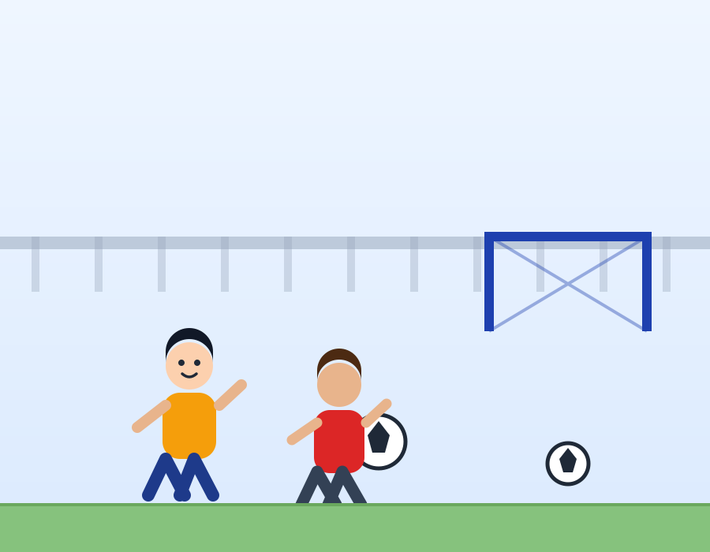
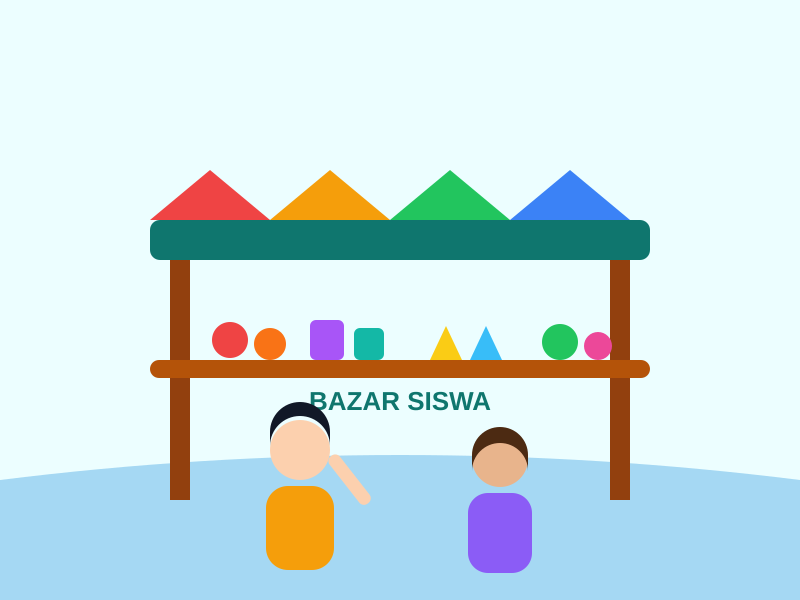

Pesona Kegiatan UPACARA & Lomba Hari Anak Nasional di SDN 1 Klambu
Suasana meriah peringatan Hari Anak Nasional: lomba mewarnai, jenis kartu, hingga pentas seni siswa kelas 1–6...
Baca selengkapnya →Sekolah Dasar Negeri di Kecamatan Klambu, Kabupaten Grobogan, yang berkomitmen mencerdaskan generasi — nyaman, berkarakter, dan berprestasi.
Kami hadir sebagai sekolah rakyat yang mengutamakan tumbuh kembang anak secara utuh: cerdas akal, kuat karakter, dan berakhlak mulia.
Guru-guru bersertifikasi yang mendidik dengan hati, memanusiakan setiap anak sesuai potensi masing-masing.
Profil Pelajar Pancasila: religius, mandiri, gotong royong, dan bernalar kritis melalui pembiasaan harian.
Raihan prestasi di tingkat kecamatan dan kabupaten: Olimpiade Sains, lomba literasi, pramuka, hingga seni.
Multimedia pembelajaran, laboratorium komputer, dan pojok baca untuk membekali anak masa depan.
Komunikasi rutin melalui kelas orang tua, kegiatan indirectly bersama komite sekolah yang aktif.
Gedung bersih, halaman hijau, dan budaya lost-and-found: setiap anak terpantau dan disambut hangat.
Beragam program yang menumbuhkan minat, bakat, dan potensi akademik siswa.


Assalamu'alaikum warahmatullahi wabarakatuh. Puji syukur ke hadirat Allah SWT, atas limpahan rahmat dan karunia-Nya website SDN 1 Klambu ini dapat hadir sebagai jendela informasi sekolah kami.
Kami percaya bahwa setiap anak adalah bintang yang bersinar. Melalui lingkungan belajar yang aman, menyenangkan, dan penuh kasih, kami membimbing anak-anak untuk tumbuh cerdas, berakhlak mulia, serta siap menjadi generasi penerus bangsa yang unggul.
Kabar terkini seputar kegiatan dan pencapaian siswa SDN 1 Klambu.
Suasana meriah peringatan Hari Anak Nasional: lomba mewarnai, jenis kartu, hingga pentas seni siswa kelas 1–6...
Baca selengkapnya →
Pembelajaran berbasis proyek membawa siswa kelas 5 mengenal budaya kewirausahaan lokal Klambu...
Baca selengkapnya →Tiga siswa kami membawa pulang medali emas dan perak cabang renang dan atletik...
Baca selengkapnya →Segera amankan kursi anak Anda di SDN 1 Klambu. Pendaftaran PPDB online maupun langsung ke sekolah.